Odoo development
Odoo 12 to 19, Enterprise and Odoo.sh. Sales, Purchase, Inventory, Accounting, CRM, HR, POS, MRP, Website and eCommerce. QWeb, OWL, automated and scheduled actions, server actions and reports.
Odoo ERP Developer · Tech Lead · AI Engineer
Five years of building on Odoo, from single modules to complete ERPs, plus the AI work I'm proudest of. Pick a chapter, or just keep scrolling.
I'm Ashik Rajesh, an Odoo ERP developer and tech lead from Kerala. For 5 years I've built the systems companies run on: backend customisation, full custom apps, AWS deployments, API integrations and workflow automation across retail, education, CRM and trading. I work AI-first: I wire GPT and Claude into the ERP, and in my own time I built Dumiko, a voice AI companion, from scratch.
Three things, usually at the same time: build the ERP, put AI inside it, and keep it running.
Odoo 12 to 19, Enterprise and Odoo.sh. Sales, Purchase, Inventory, Accounting, CRM, HR, POS, MRP, Website and eCommerce. QWeb, OWL, automated and scheduled actions, server actions and reports.
GPT and Claude inside Odoo for ticket triage, helpdesk replies and CRM lead enrichment. Local and cloud LLMs, RAG, tool calling, speech, prompt design, and bots for task assignment and lead scoring.
n8n, Zapier, Make.com and webhooks. AWS EC2, Oracle Cloud, Cloudflare, mail servers, Git workflows and rollbacks. OWASP practice and hardened Odoo installs.
From LLMs inside the ERP to a complete voice companion with a body, a memory and hands.
Personal project · Built from scratch
A voice AI companion who lives on your PC. She listens, answers in a natural voice with real-time lip sync, remembers your life over weeks, changes expression with her mood, starts conversations herself, teaches you any subject, and runs tasks on your Windows PC through 40+ tools.
Her ears, brain and memory run on an ordinary laptop with a 4 GB GPU and no paid services. A faster, free cloud brain is optional, and the app falls back between models on its own.
Real, unedited conversations recorded from the app on a demo memory (the user "Alex" is fictional). Tap one to watch with sound.
An assistant for the Odoo website chat that follows the sales team's script, collects the visitor's details through an inline form, and creates the CRM lead with the full transcript. Guards stop it from quoting prices or claiming an enquiry is recorded before it really is.
GPT and Claude for ticket categorisation, helpdesk auto-responses, CRM lead enrichment and automated invoice checking, plus n8n and Zapier workflows with LLM bots for task assignment and lead scoring.
Thirteen full applications I designed and built on Odoo 17 for a UAE trading group. Each one has a step-by-step workflow page. Names, figures and faces in the screenshots are blurred or fictional.
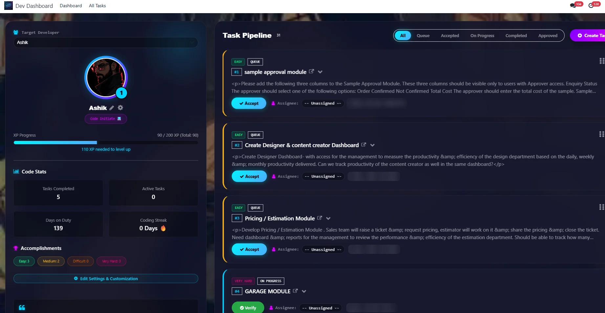
App 01 · Engineering
A gamified task board for the tech team. Managers queue and prioritise work, developers pick it up, and every finished task earns XP by difficulty, so the manager can see who is delivering and at what level.
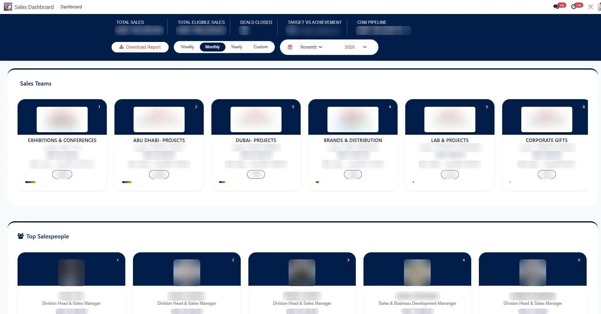
App 02 · Sales
One live view of company sales, team targets and every salesperson's incentive. It replaced the monthly spreadsheets and is used from the director down to each executive, with access by role.
App 03 · Automotive ERP
A complete workshop ERP for a UAE garage, built as one Odoo app with around 60 models. It runs from vehicle intake to handover, with VAT, stores, accounting, payroll and BI in the same system.
 04
04A weekly management report with 14 sections, from SEO, leads, social and budget to competitor watch and risks, with a health score out of 100.
See the workflow → 05
05A REST API with API keys, so resellers can pull products, brands and live stock, priced from their pricelist plus a global or per-category margin. Every call is logged.
See the workflow → 06
06Sales request artwork jobs, the lead designer approves and assigns them, and the app tracks availability, work units, revisions and right-first-time rates.
See the workflow →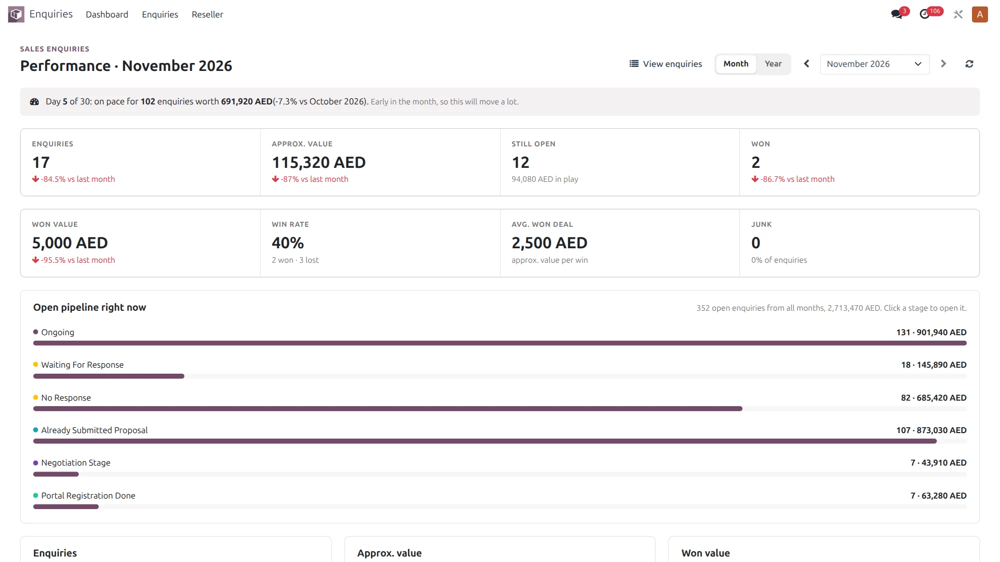
07It replaced the enquiry spreadsheet: monthly KPIs, a win rate that leaves junk out, an on-pace projection, the live pipeline and 12-month trends with a forecast.
See the workflow →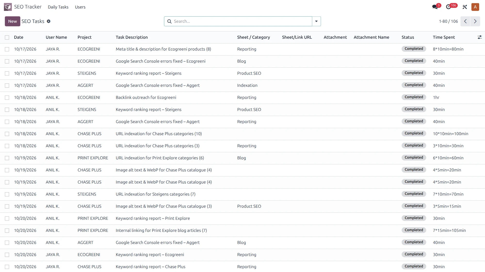
08It replaced the SEO team's daily Excel log. Each task records who, which brand, what was done, links, attachments and time spent, grouped for reviews.
See the workflow → 09
09Anyone can assign a task to anyone. A Kanban board with departments, priorities and overdue flags, a full audit trail and pivot reports.
See the workflow →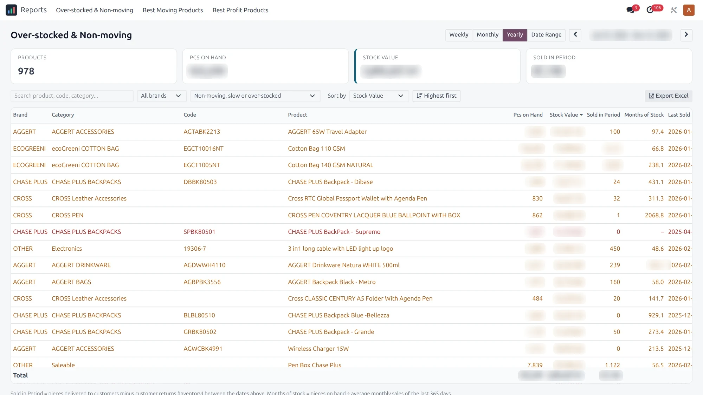
10Over-stocked, non-moving, best-moving and best-profit reports. Profit ties out exactly to the accounts, with brand filters and Excel export.
See the workflow →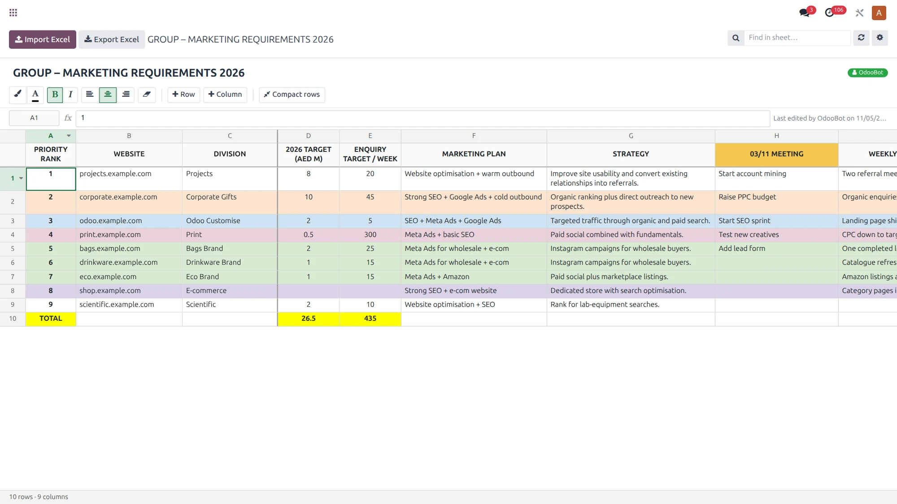
11A Google-Sheets-style grid inside Odoo: formula bar, copy and paste from Excel, frozen and resizable columns, and lossless .xlsx import and export.
See the workflow → 12
12A call-back app for past clients with call status, responses, follow-ups and full history. One click creates an enquiry in the pipeline.
See the workflow →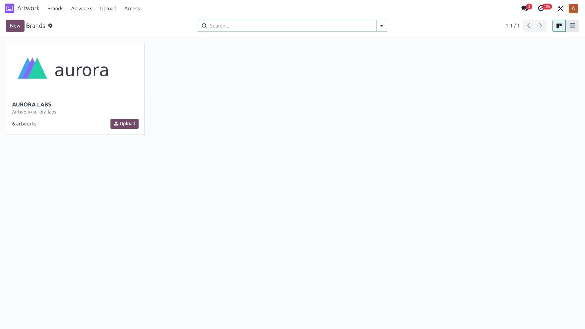
13Each client brand gets a private gallery at /artwork/<brand>. Clients sign in with a one-time code emailed to their company domain and only see their own brand. Codes expire after 10 minutes, sessions lock when idle, attempts are rate-limited per email and IP, and every login and view is logged.
Modules and projects from earlier roles and smaller builds.
HR, Daily Work Report, Appraisals, Approvals and NCLEX-RN training modules for Tiju's Academy.
POS, Inventory and Accounting across stores, with barcode scanners, printers and payment gateways.
Tiered 5 / 2 / 15% incentive logic computed from sales data. Auditable and upgrade-safe.
Corporate price rules over pricelists, built around the data traps that usually break quotes.
End-to-end installs from server setup to hardening: AWS EC2, mail routing and Git rollbacks.
Hands-on security practice around the OWASP Top 10, plus reverse-engineering experiments with Ghidra.
Websites I design and code from scratch: landing pages, a dealership, a gaming HUD and a portfolio. Hover to watch a scroll-through, click to open.
An illustrator's portfolio: bold headline, collage hero, a numbered works grid and a sketch-to-final process strip.
View website →A full stream pack: glowing Offline, Starting soon, Pause and Just chatting screens, plus panel buttons, built around a Reyna character.
View website →A premium used-car dealership site: cinematic hero, services, featured inventory with prices and specs, and a test-drive call to action.
View website →A cyberpunk HUD landing page in neon purple and pink: grunge headlines, live clock and charts, stat bars and a parallax character.
View website →Layouts, animation and code are mine. Illustrations and photos in these sites are sample artwork used as placeholders.
A cinematic portfolio built with Three.js: an intro synced to audio, a scroll-driven camera, real-time water, 3D swords and GPU sakura petals.
Live brand stores I build and run on Odoo for clients.
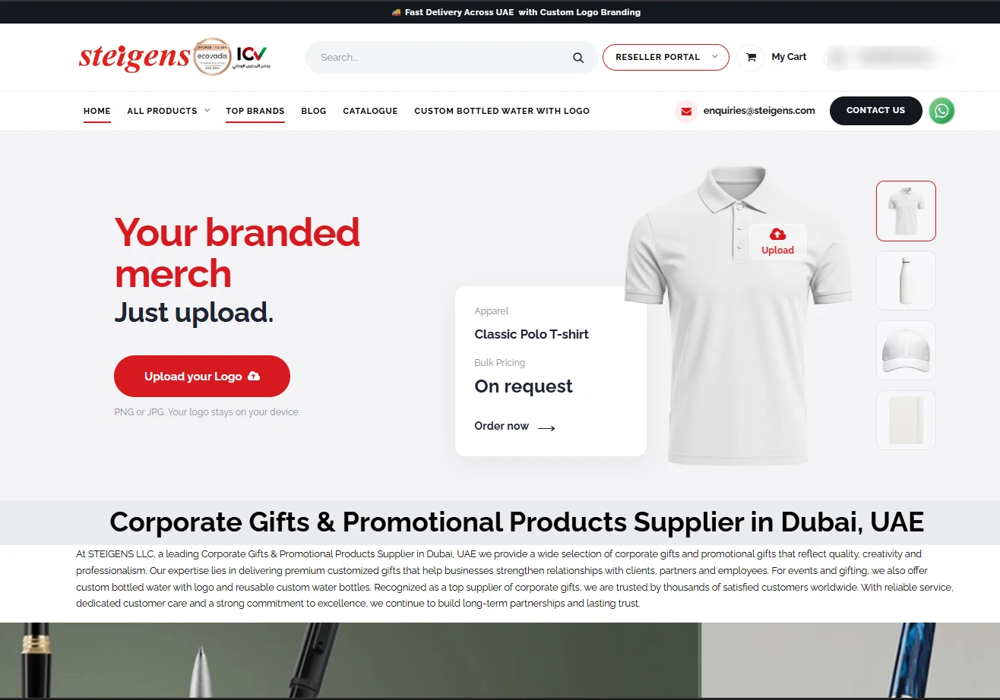
01Corporate-gifts eCommerce on Odoo 17 for the UAE: logo-upload hero, product pages, reseller portal, custom blocks and SEO.
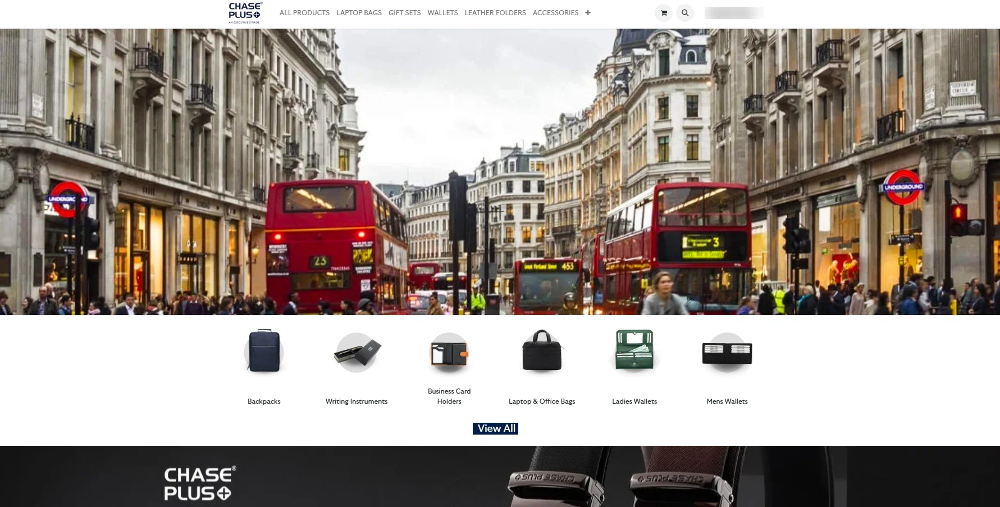
02A premium leather and bags brand store: category showcase, catalogue and online shop, all running on Odoo.
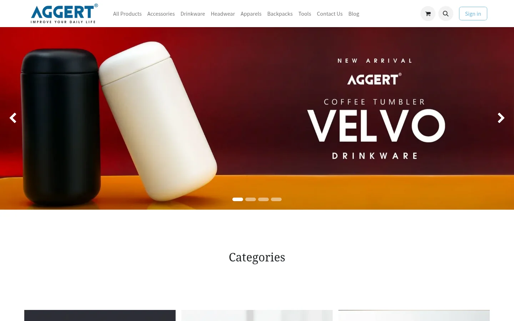
03A travel and lifestyle brand store with drinkware, backpacks, apparel and accessories, plus a blog and SEO.
What I build for fun, and what it taught me.
DubuMod#9981 · "Cute face. Brutal bans."
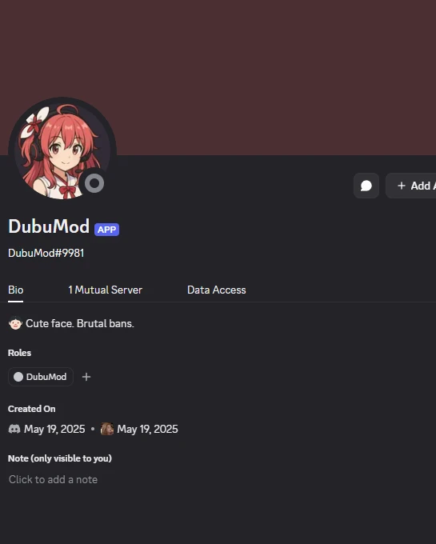
My own Discord bot, live since 19 May 2025. It runs as a moderator with full access to the server: it kicks and bans troublemakers, hands out roles, plays music in voice channels, and runs mini games to keep members busy.
Personal project · Game engineering
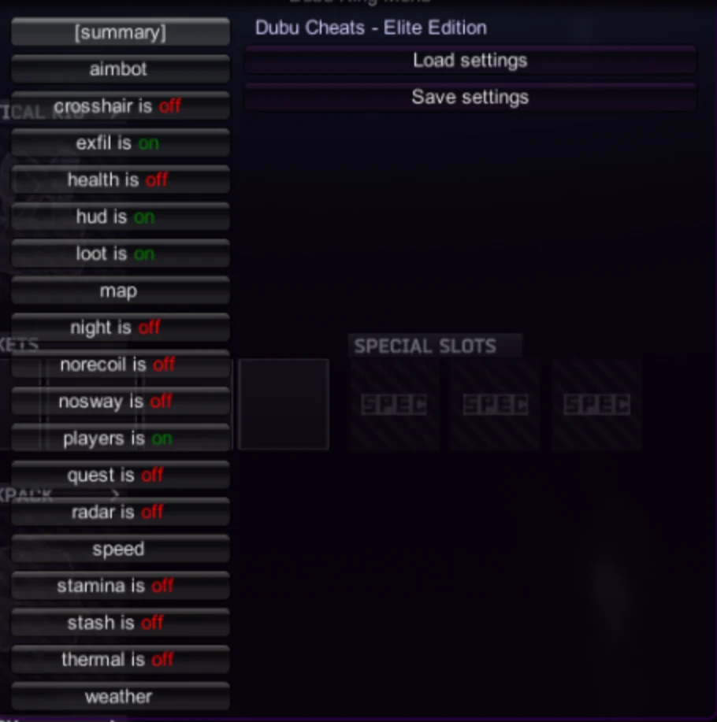
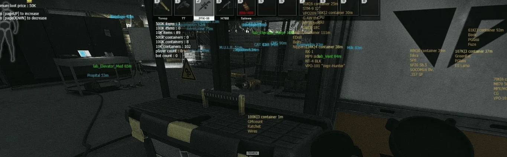
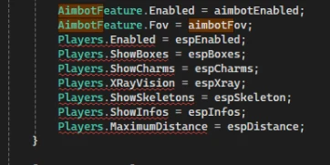
A BepInEx plugin for a Unity game, built by reverse-engineering its compiled assemblies. It taught me how to find my way around a large codebase with no documentation, and how to build tooling on top of it.
Eight roles, one direction: deeper into Odoo, and more AI in everything.
Lead the tech team for Steigens: the thirteen custom Odoo apps (sales dashboard and incentives, enquiries, reseller API, artwork portal and more), the Steigens website and its SEO, and production support.
Odoo 17 and 19 Enterprise development and eCommerce for the group's brands (Steigens, Chase Plus, Aggert), deployed across Oracle Cloud, AWS and Cloudflare.
Led a team of two. HR, DWR, Appraisal, Approval and NCLEX-RN modules. Odoo on AWS, mail server, Git branching and rollbacks.
Remote. Evaluating and improving AI model responses: rating outputs, writing and reviewing prompts, and checking answers for accuracy and quality.
Remote. Evaluating and improving AI model responses: rating outputs, writing and reviewing prompts, and checking answers for accuracy and quality.
n8n, Zapier and OpenAI workflows. LLM bots for task assignment and lead scoring. GPT and Claude inside Odoo for tickets, helpdesk and CRM.
Multi-location retail ERP: POS, Inventory, Accounting, barcode scanners, printers and payment gateways. Production go-lives and live support.
Odoo 12 and 13. eCommerce with Sales, POS and Manufacturing. ERP for Ayurveda hospitals. Websites built on Odoo.
Full-time roles, freelance builds or ongoing support. Remote work, anywhere in the world.
Dashboards, incentive engines, portals and full vertical ERPs, built upgrade-safe.
LLM helpdesk replies, lead scoring, chat assistants and document checks.
Move from older Odoo versions to 17, 18 or 19 without losing your customisations.
AWS, Oracle Cloud or Odoo.sh setup, hardening, mail, backups and monthly support.
Tell me what you're building. I usually reply within a day.